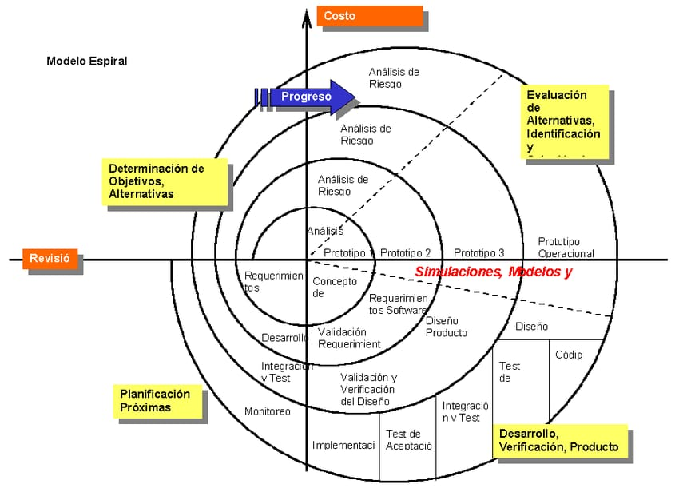

La metodología en espiral es un modelo de desarrollo de software que combina la planificación, el diseño, las pruebas y la evaluación de riesgos en diferentes ciclos llamados espirales. Cada ciclo permite mejorar el sistema de manera progresiva hasta obtener el producto final.
Esta metodología es utilizada principalmente en proyectos grandes o complejos, ya que ayuda a identificar errores y riesgos desde las primeras etapas del desarrollo.
